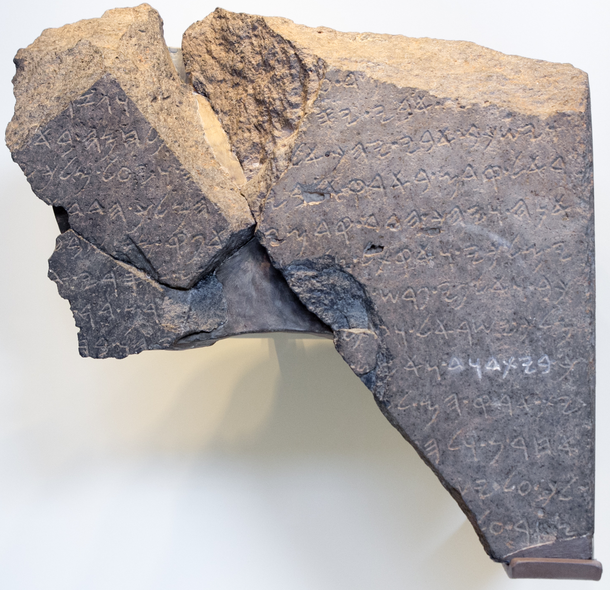
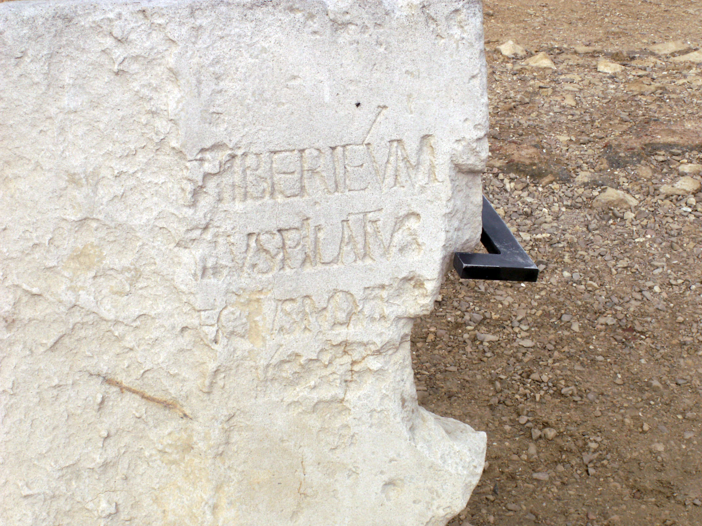
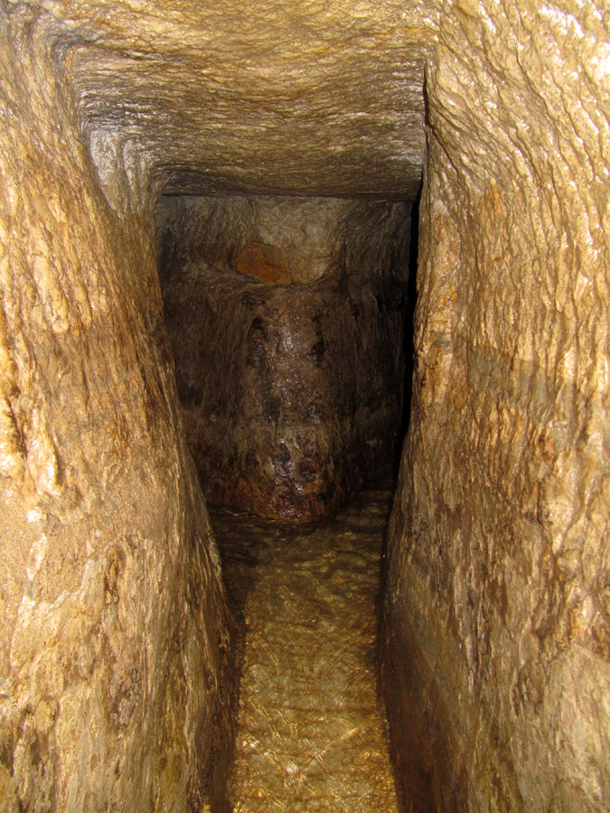
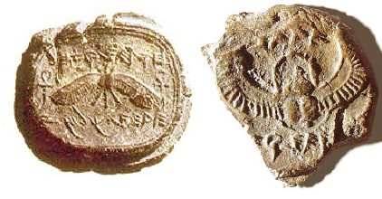
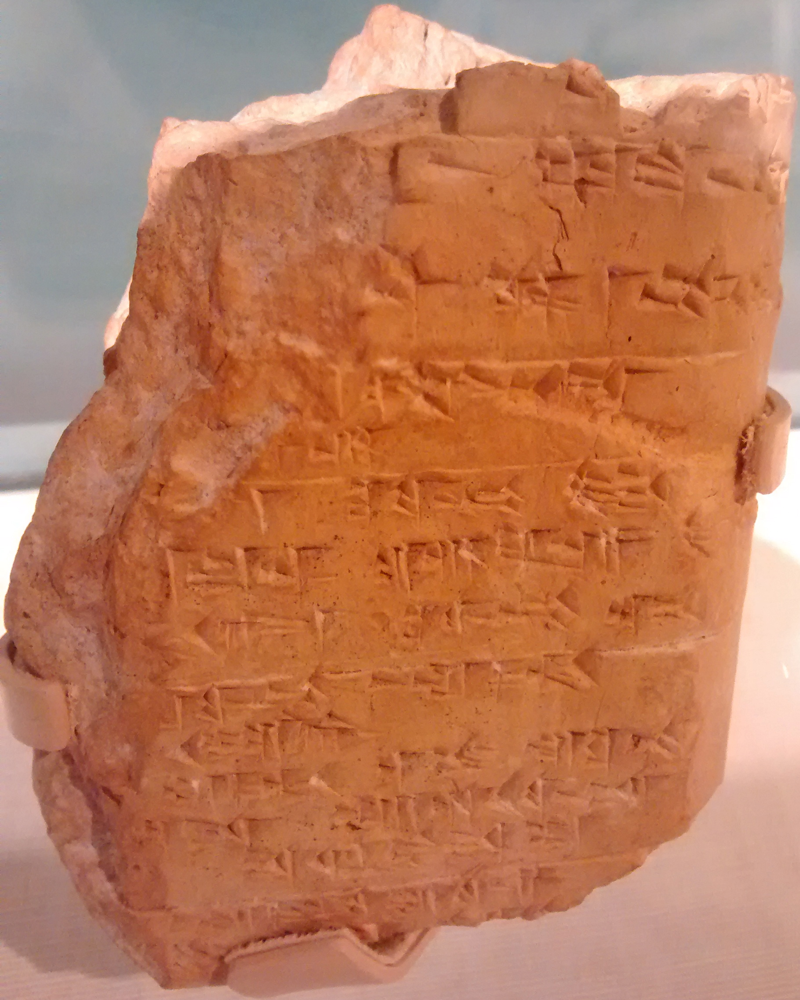

Supplemental Resource
The Stones Cry Out
"I tell you," he replied, "if they keep quiet, the stones will cry out." — Luke 19:40
For centuries, critics dismissed biblical accounts as pious myths. Today, archaeology has verified more than 25,000 sites, names, and events mentioned in the text, systematically dismantling the "mythology" argument.
"King David is a literary fiction, a 'King Arthur' of Israel created centuries later to give the nation a heroic past."

In 1993, at the foot of Mount Hermon, archaeologists found a 9th-century BC victory monument. Carved in the stone was the phrase "House of David." It was the first non-biblical evidence of David’s existence, proving he was a historical monarch, not a fairy tale.
"Pontius Pilate was a character invented by the Gospel writers; there is no record of such a man in Roman administrative history."

Italian archaeologists excavating a Roman theater in Caesarea Maritima uncovered a limestone block. The inscription clearly read: "Pontius Pilatus, Prefect of Judea." A single stone silenced decades of academic skepticism regarding the trial of Jesus.
"The biblical stories of vast engineering projects like the Tunnel of Siloam are exaggerations of primitive tribal leaders."


Archaeologists found the 1,750-foot tunnel carved through solid rock under Jerusalem, matching the account in 2 Kings 20. More recently, in 2015, a clay seal (bulla) belonging to King Hezekiah himself was found in the Ophel, dating to the exact period the Bible describes.
"The Bible mentions a 'Hittite Empire' over 40 times, but history knows no such people. They are a biblical invention."

Archaeologists discovered the massive Hittite capital in modern-day Turkey, including a library of 10,000 clay tablets. This "mythical" people turned out to be one of the greatest superpowers of the ancient world, exactly as the Old Testament recorded.
"Archaeology has not yet produced any finding that is in contradiction to a biblical utterance. It has confirmed biblical history in general and in detail."